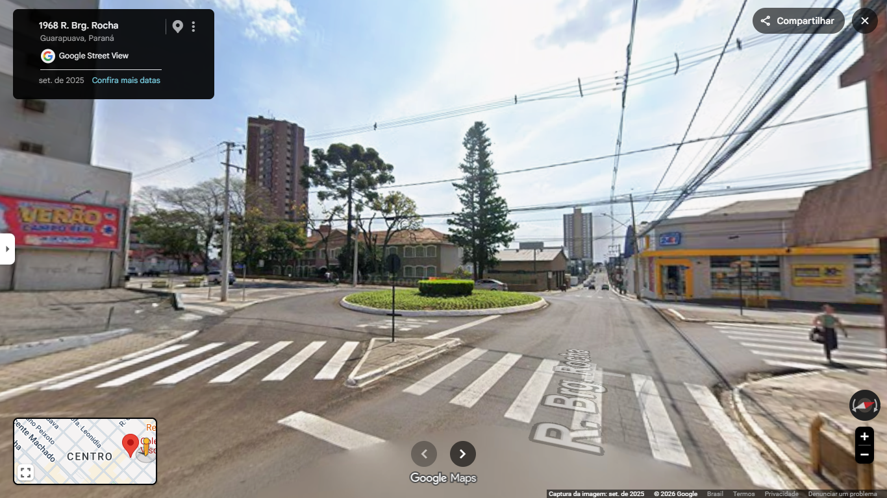
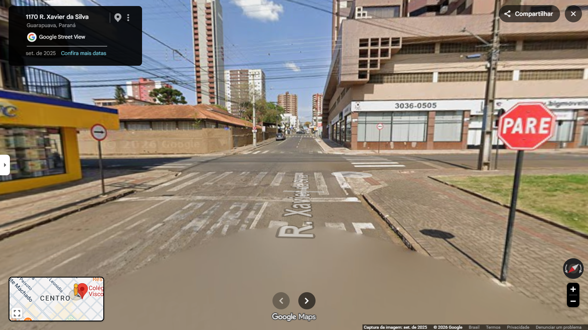

O que é Acessibilidade?
O Conceito: Acessibilidade significa garantir que espaços, transportes, informações e serviços possam ser utilizados por todas as pessoas com autonomia e segurança, independentemente de suas capacidades físicas, sensoriais, cognitivas ou motoras.
Por que é essencial? Envolve a criação de calçadas niveladas, semáforos com aviso sonoro, textos em braille, intérpretes de Libras e sites adaptados. Acessibilidade é um direito, não um privilégio.
Nosso Objetivo: Através dos projetos da turma 2ºC IFA, queremos trazer luz às barreiras invisíveis. Ao vivenciar limitações e analisar o trânsito no entorno do nosso colégio, propomos soluções para transformar nossa cidade num lugar mais justo.
Simulador de Baixa Mobilidade
O que é o tema: A baixa mobilidade atinge pessoas que possuem limitações temporárias ou permanentes para se deslocar (cadeirantes, idosos, gestantes, pessoas com próteses ou muletas).
Nosso Projeto (Grupo 1): Criamos um simulador prático. O objetivo é permitir que as pessoas sintam na pele as dificuldades reais do espaço urbano, como calçadas esburacadas e falta de rampas. Entender o problema na prática gera empatia.
Simulador de Baixa Visão
O que é o tema: A baixa visão ocorre quando a pessoa apresenta perda significativa da acuidade visual, algo que não pode ser totalmente corrigido apenas com óculos comuns, cirurgias ou lentes.
Nosso Projeto (Grupo 2): Desenvolvemos um simulador com óculos adaptados. A experiência demonstra a importância vital de calçadas bem estruturadas, pisos táteis de alerta e direcional, e do contraste de cores na sinalização urbana.
Rotatória: Brigadeiro Rocha x XV de Novembro
O Problema: Esta rotatória é um ponto crítico. O grande fluxo de veículos aliado ao formato da via torna a travessia de pedestres, especialmente dos alunos, extremamente perigosa e demorada.
Nossa Solução (Grupo 3): Apresentamos um estudo de melhoria: readequação da rotatória, instalação de faixas elevadas para forçar a redução de velocidade e semáforos com sinalização sonora.

Cruzamento: Padre Chagas x Xavier da Silva
O Problema: Outro gargalo ao redor do Colégio. A via sofre com falta de visibilidade nos cruzamentos e velocidade excessiva dos carros, colocando em risco todos que transitam por ali.
Nossa Solução (Grupo 4): O projeto propõe o rebaixamento adequado de todas as calçadas das esquinas (com inclinação correta), reforço na sinalização de PARE e instalação de piso tátil para guiar pedestres.
